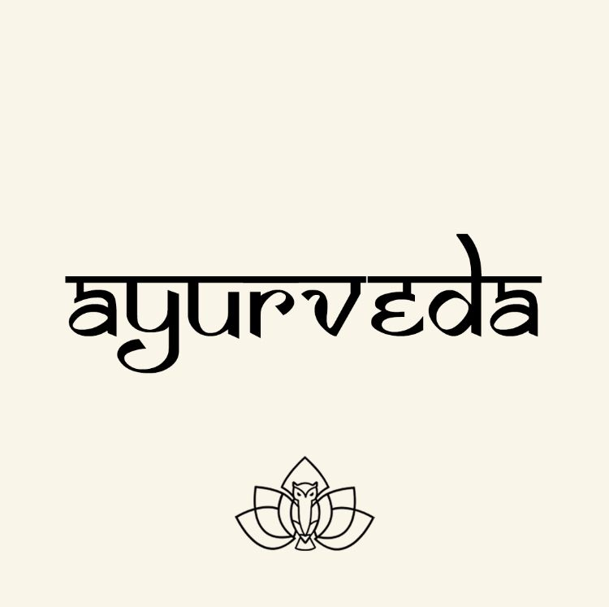
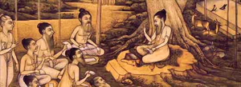
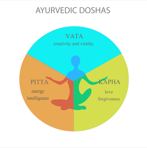

Natural healing solutions inspired by ancient Ayurvedic wisdom.
हजारो AVN व मणक्याचे (Spinal Disorder) रुग्णांना शस्त्रक्रिया न करता आयुर्वेदिक उपचाराने आराम मिळालेला आहे. तुम्हालाही AVN व मणक्याचे (Spinal Disorder) चा त्रास असल्यास वेळ न लावता योग्य मार्गदर्शन घ्या.

Ayurveda is best described as the art of living in harmony with the laws of nature. An ancient Indian system of natural and holistic medicine, it promotes living a balanced life by bringing about healthy and natural lifestyle changes. The age old wisdom contained in Ayurveda is as relevant today as it was back in the time. Ayurveda and its principles can easily be adapted in today’s fast paced life to maintain and lead a healthy, stress free and balanced life. Ayurveda has three main focuses- healing, prevention & healthcare. Health care includes maintenance of good health as well as rejuvenation and methods to achieve longevity. Ayurvedic Home Remedies can prove effective in treating various ailments. But the main focus is on prevention as it is easier to maintain health than to restore it once it has become a wreck.

The ancient rishis or seers of truth, discovered truth by means of religious practices & disciplines. Through intensive meditation, they manifested truth in their daily lives. Ayurvedic system of health is conversance of practical, philosophical & religious experiences of the great sages. The historical evidence of Ayurveda can be found in ancient books of wisdom known as the Vedas. Atharva Veda, that is known to have been written over 10,000 years ago, describes Ayurveda as a system that helps maintain health in a person by using the inherent principles of nature to bring the individual back into equilibrium with their true self.

Ayurveda is based on the principles of three doshas or the three basic energy types which are further classified as vata, pitta & kapha. According to Ayurveda, these doshas or energies can be found in everyone and everything thus making them the essential building blocks of the material world. All the three doshas combine to create different climates, different foods, different species, and even different individuals within the same species and perform different physiological functions in every individual body. In fact, the particular ratio of vata, pitta, and kapha within each of us has a significant influence on our individual physical, mental, and emotional character traits.